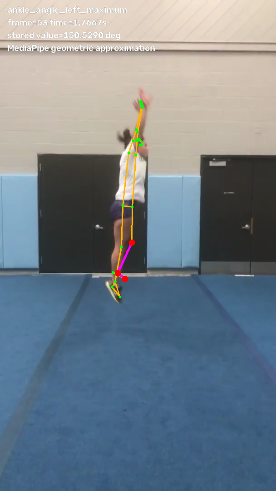
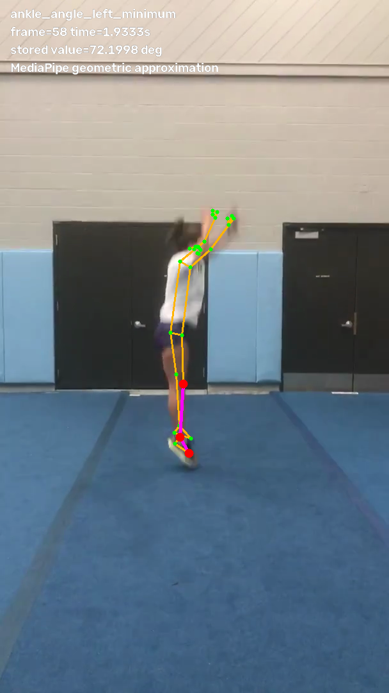
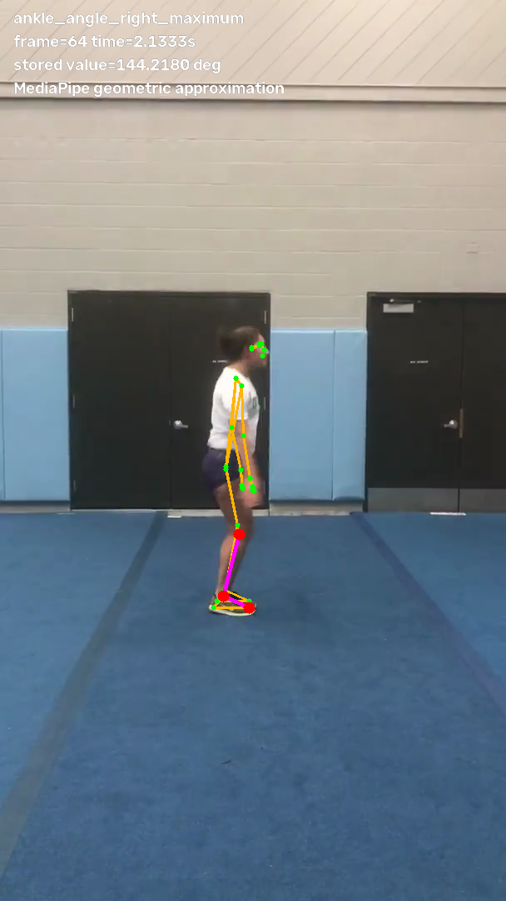
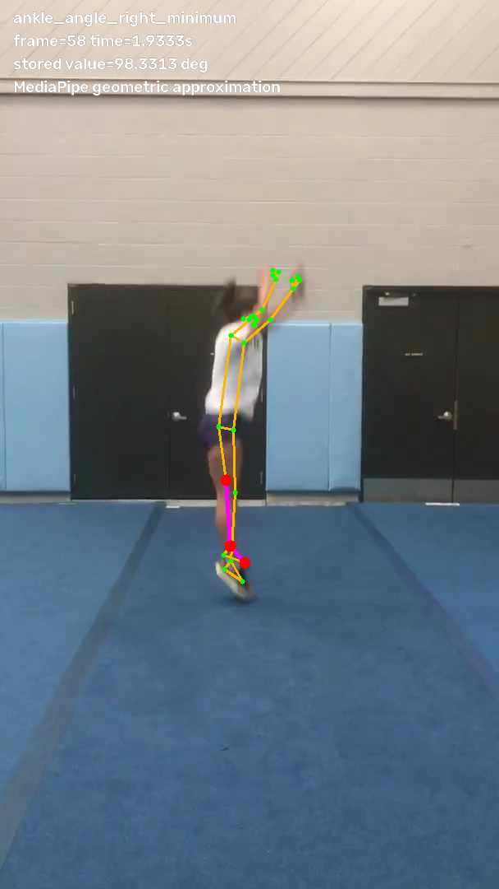
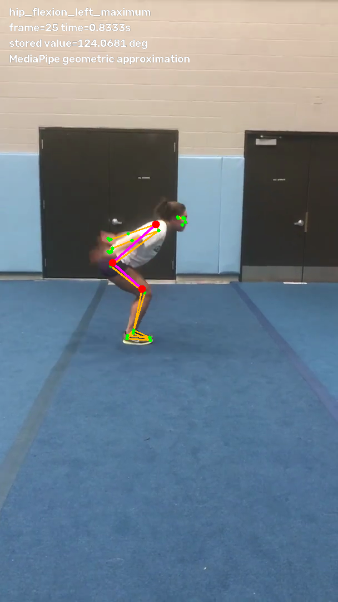
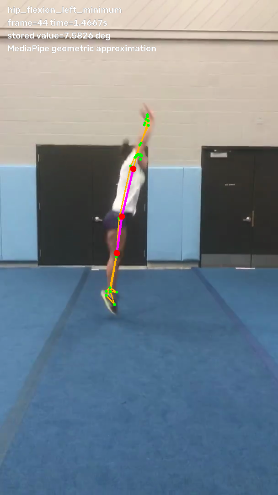
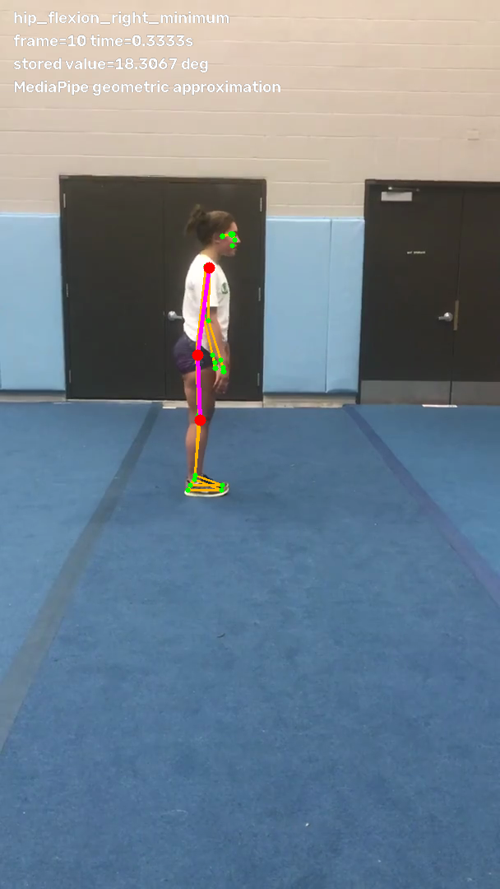
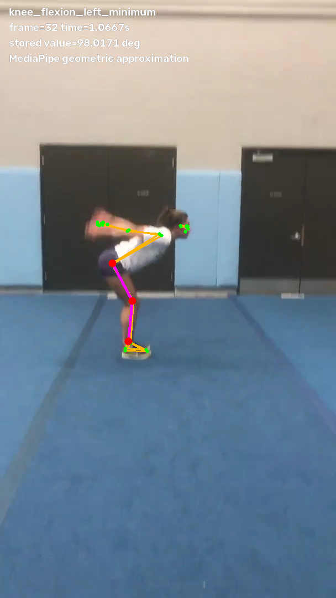
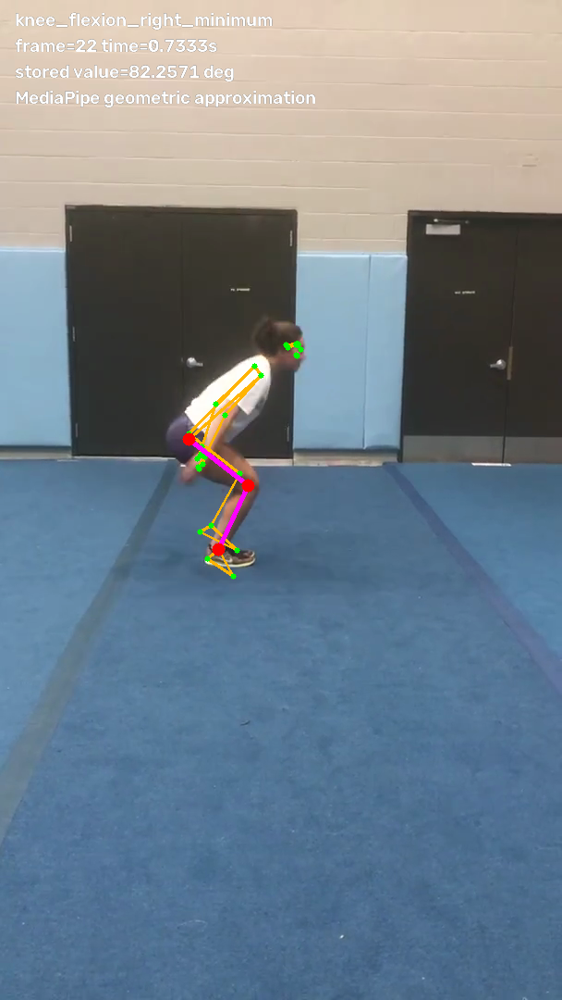

Prompt 14 Measurement Audit Images show frame-specific maximum/minimum source angles. Aggregate features are traced in frame_provenance.json because no single frame can visually equal an aggregate statistic.

ankle_angle_left_maximum_frame_0053 
ankle_angle_left_minimum_frame_0058 
ankle_angle_right_maximum_frame_0064 
ankle_angle_right_minimum_frame_0058 
hip_flexion_left_maximum_frame_0025 
hip_flexion_left_minimum_frame_0044 hip_flexion_right_maximum_frame_0022 
hip_flexion_right_minimum_frame_0010 knee_flexion_left_maximum_frame_0002 
knee_flexion_left_minimum_frame_0032 knee_flexion_right_maximum_frame_0010 
knee_flexion_right_minimum_frame_0022